6 ggplot2 入門
今回の目標
- ggplot2 で作図する方法を覚えよう！
6.1 準備
今回利用するパッケージを読み込もう。ggplot2 は tidyverse に含まれているので、library() で tidyverse を読み込めばよい。
6.2 データフレーム
ggplot2 で図を作るためには、データフレーム (data frame) と呼ばれる形式のデータが必要である。 そこで、まずデータフレームについて説明する。
6.2.1 CSVデータの読み込み
CSV形式で保存されたデータセットをもっているなら、readr::read_csv() や read.csv() などでそのデータを読み込めば、データフレームができる。
readr パッケージも tidyverse に含まれているので、tidyverse を読み込み済みならあらためて library(readr) を実行する必要はない。 このように、tidyverse はデータ分析でよく使うツールをまとめて提供しており、便利である。 詳しくは、『私たちのR』「データハンドリング」 を参照されたい。
例として、前にも使った fake_data_01.csv を読み込んでみよう。プロジェクト内の data ディレクトリ（フォルダ）に fake_data_01.csv があることを想定している。
myd <- read_csv("data/fake_data_01.csv")これがデータフレームかどうか確かめるために、is.data.frame() を使う。
is.data.frame(myd)[1] TRUETRUE （真）という答えが返され、myd がデータフレームであることがわかる。
データフレームの中身は、tibble::glimpse() で確認できる。
glimpse(myd)Rows: 100
Columns: 6
$ id <dbl> 1, 2, 3, 4, 5, 6, 7, 8, 9, 10, 11, 12, 13, 14, 15, 16, 17, 18, …
$ gender <chr> "male", "male", "male", "male", "male", "male", "male", "male",…
$ age <dbl> 52, 33, 22, 33, 26, 37, 50, 30, 62, 51, 55, 36, 66, 42, 36, 47,…
$ height <dbl> 174.0, 175.3, 175.0, 170.1, 167.4, 159.3, 173.3, 162.5, 160.2, …
$ weight <dbl> 63.1, 70.2, 82.6, 81.8, 51.2, 57.8, 68.6, 47.2, 68.2, 59.4, 66.…
$ income <dbl> 3475810, 457018, 1627793, 6070642, 1083052, 2984929, 1481061, 1…id, gender, age, height, weight, income という6つの変数があり、gender が <chr> すなわち文字列 (character) 型で、他の変数はすべて <dbl> すなわち実数 (double [double-precision floating-point]) 型であることがわかる。
データフレームの中身を確認する方法は他にもいくつかある。 View() を使うと、表計算ソフトのスプレッドシートと同じように、データを表形式で表示してくれる。 Source ペインに表示されるので確認が終わったらタブを閉じるようにしよう。 この関数は qmd (Rmd) ファイルではなく、Console に直接入力したほうが良い。
View() や help() のように、RStudio でインタラクティブに（マウスを使って）操作することを想定するコマンドは、Console に直接書き込むようにする。また、繰り返し使わないコマンド（例：install.packages() ）も R マークダウンに記録するのではなく、Consoleに書き込もう。
View(myd)ひとつひとつの変数が列（縦方向の並び）を構成し、観測個体が行（横方向の並び）を構成していることがわかる。 View() の代わりに、RStudio の右下のペインにある Environment タフで、Data という項目に表示されているデータの右端にあるボタンを押して、データを表示することもできる。
データフレームの各列の名前（つまり、変数名）を知りたいときは、names() を使う。
names(myd)[1] "id" "gender" "age" "height" "weight" "income"これで、どのような名前で変数が記録されているかがわかる。
この例では変数が6つしかないので自分で変数の数を数えるのも容易である。しかし、変数の数が多い場合には、自分で数えるのは面倒だ。そのようなときは、ncol() を使う（ncol は the number of columns [列の数] の略である）。
ncol(myd)[1] 6これで、myd には変数が6つあることがわかる。
また、データに含まれる観測個体の数は、nrow() で確かめることができる (the number of rows [行の数] の略である）。
nrow(myd)[1] 100myd は100行あることがわかる。
dim() を使えば、行数と列数を1度に調べることができる。
dim(myd)[1] 100 6実は、行数と列数は、上でglimpse(myd) を実行したときにも表示されていた。
データの先頭の数行を表示して変数の中身を確認したいときは、head() を使う。
head(myd)# A tibble: 6 × 6
id gender age height weight income
<dbl> <chr> <dbl> <dbl> <dbl> <dbl>
1 1 male 52 174 63.1 3475810
2 2 male 33 175. 70.2 457018
3 3 male 22 175 82.6 1627793
4 4 male 33 170. 81.8 6070642
5 5 male 26 167. 51.2 1083052
6 6 male 37 159. 57.8 2984929このように、デフォルトでは最初の6行が表示される。表示する行数は、自分で指定できる。引数 nを使う。
head(myd, n = 4)# A tibble: 4 × 6
id gender age height weight income
<dbl> <chr> <dbl> <dbl> <dbl> <dbl>
1 1 male 52 174 63.1 3475810
2 2 male 33 175. 70.2 457018
3 3 male 22 175 82.6 1627793
4 4 male 33 170. 81.8 6070642同様に、データの末尾は tail() で表示できる。
tail(myd, n = 5)# A tibble: 5 × 6
id gender age height weight income
<dbl> <chr> <dbl> <dbl> <dbl> <dbl>
1 96 female 65 161. 46.8 6127136
2 97 female 45 161. 48.7 1062663
3 98 female 53 166. 64.2 10154200
4 99 female 43 158. 48.5 8287163
5 100 female 48 154. 42 1125390データの中身をさらに詳しく知りたい場合には、str() (structure) を使う。
str(myd)spc_tbl_ [100 × 6] (S3: spec_tbl_df/tbl_df/tbl/data.frame)
$ id : num [1:100] 1 2 3 4 5 6 7 8 9 10 ...
$ gender: chr [1:100] "male" "male" "male" "male" ...
$ age : num [1:100] 52 33 22 33 26 37 50 30 62 51 ...
$ height: num [1:100] 174 175 175 170 167 ...
$ weight: num [1:100] 63.1 70.2 82.6 81.8 51.2 57.8 68.6 47.2 68.2 59.4 ...
$ income: num [1:100] 3475810 457018 1627793 6070642 1083052 ...
- attr(*, "spec")=
.. cols(
.. id = col_double(),
.. gender = col_character(),
.. age = col_double(),
.. height = col_double(),
.. weight = col_double(),
.. income = col_double()
.. )
- attr(*, "problems")=<externalptr> この情報はR初心者にはわかりにくいと思われるので、最初は glimpse() を使った方がよいだろう。
データセットをRに読み込んだら、glimpse() をはじめとするさまざまな関数を使って、データの中身を確認する習慣を身につけよう。
6.2.2 データフレームの作成
データフレームは、data.frame() を使ってRで作ることもできる。データフレームの代わりにtibble と呼ばれる形式のデータを使うこともできる。tibble は、tibble::tibble() で作れる。
練習のために、df1という名前のデータフレーム (data.frame) と、df2という名前のtibble を作ってみよう。まず、x とy という2つの変数をもつ df1 を作る。
df1 <- data.frame(x = 1 : 100,
y = 100 : 1)
is.data.frame(df1)[1] TRUEこのデータの中身を確認してみよう。
glimpse(df1)Rows: 100
Columns: 2
$ x <int> 1, 2, 3, 4, 5, 6, 7, 8, 9, 10, 11, 12, 13, 14, 15, 16, 17, 18, 19, 2…
$ y <int> 100, 99, 98, 97, 96, 95, 94, 93, 92, 91, 90, 89, 88, 87, 86, 85, 84,…x と y という変数があり、それぞれが \<int\> すなわち整数 (integer) 型であることがわかる。また、データは100行2列である。
次に、v1, v2, v3 という3つの変数をもつ df2 を tibble() で作る。rnorm(n, mean, sd) で、平均がmean、標準偏差がsd の正規分布から n 個の乱数を生成することができる（詳しくは、後半のトピックで説明する）。
df2 <- tibble(v1 = rnorm(100, mean = 0, sd = 5),
v2 = rnorm(100, mean = -4, sd = 5),
v3 = rnorm(100, mean = 0, sd = 1))
is.data.frame(df2)[1] TRUEdf2 の中身を確認しておこう。
glimpse(df2)Rows: 100
Columns: 3
$ v1 <dbl> 0.3599493, -0.9966102, -1.2655046, 1.5909425, 2.6187782, 5.1226313,…
$ v2 <dbl> -2.9090237, 6.3595086, -6.2262252, -3.9614332, -10.3659427, -8.6782…
$ v3 <dbl> -1.33733370, 0.17748933, -1.57167162, 1.84867894, 0.31505181, 0.168…v1, v2, v3 という3つの変数があり、それぞれが \<dbl\> すなわち実数型であることがわかる。このデータフレームは100行3列である。
\<dbl\> というのは、double precision floating point number type（倍精度浮動小数点数型）のことである。この授業で必要な範囲では、実数 (real number) であると考えて差し支えない。この他に授業で出てくる変数の型は、
-
\<int\>: integer（整数型） -
\<lgl\>: logical（論理型） -
\<chr\>: character（文字列型） -
\<fct\>: factor（因子型）
それぞれ登場したときに必要な範囲で説明するが、詳しくは「プログラミング」の授業で勉強してほしい。
このように、data.frame() と tibble() を使って、df1とdf2という “data.frame” （データフレーム）を作ることができた。基本的にはどちらの方法でデータフレームを作っても良いが、特にdata.frame() のほうを好む理由がなければ、今後は tibble() でデータフレーム (tibble) を作ろう。（tibble を優先する理由の説明は割愛するが、Consoleに直接 df1 [これは data.frame である] と入力して実行した結果と、 同じく df2[これは tibble である] と入力して実行した結果を比べると、tibble のほうが良い理由の1つがわかるだろう。）
6.2.3 組み込みデータ
Rにはあらかじめいくつかの（多くの！）データフレームが用意されている。たとえば、自動車に関するデータセットであるmtcarsというものがある。このデータは、data() で呼び出すことができる。
data(mtcars)これを実行すると、RStudio 右下ペインの Environment タブの中で、Values という項目のところに、mtcars が表示されるはずだ。この中身を確認してみよう。
glimpse(mtcars)Rows: 32
Columns: 11
$ mpg <dbl> 21.0, 21.0, 22.8, 21.4, 18.7, 18.1, 14.3, 24.4, 22.8, 19.2, 17.8,…
$ cyl <dbl> 6, 6, 4, 6, 8, 6, 8, 4, 4, 6, 6, 8, 8, 8, 8, 8, 8, 4, 4, 4, 4, 8,…
$ disp <dbl> 160.0, 160.0, 108.0, 258.0, 360.0, 225.0, 360.0, 146.7, 140.8, 16…
$ hp <dbl> 110, 110, 93, 110, 175, 105, 245, 62, 95, 123, 123, 180, 180, 180…
$ drat <dbl> 3.90, 3.90, 3.85, 3.08, 3.15, 2.76, 3.21, 3.69, 3.92, 3.92, 3.92,…
$ wt <dbl> 2.620, 2.875, 2.320, 3.215, 3.440, 3.460, 3.570, 3.190, 3.150, 3.…
$ qsec <dbl> 16.46, 17.02, 18.61, 19.44, 17.02, 20.22, 15.84, 20.00, 22.90, 18…
$ vs <dbl> 0, 0, 1, 1, 0, 1, 0, 1, 1, 1, 1, 0, 0, 0, 0, 0, 0, 1, 1, 1, 1, 0,…
$ am <dbl> 1, 1, 1, 0, 0, 0, 0, 0, 0, 0, 0, 0, 0, 0, 0, 0, 0, 1, 1, 1, 0, 0,…
$ gear <dbl> 4, 4, 4, 3, 3, 3, 3, 4, 4, 4, 4, 3, 3, 3, 3, 3, 3, 4, 4, 4, 3, 3,…
$ carb <dbl> 4, 4, 1, 1, 2, 1, 4, 2, 2, 4, 4, 3, 3, 3, 4, 4, 4, 1, 2, 1, 1, 2,…32行11列のデータであることがわかる。この時点で、 Environment タブの中で Data 項目の中に mtcars が移動し、データフレームとして認識されていることがわかる。念のために確認しておこう。
is.data.frame(mtcars)[1] TRUEこのデータの詳細を確認したければ、次のコマンドで。
他にどんなデータが利用可能か確認したければ、以下を実行する。
data()6.3 ggplot2の基礎
6.3.1 ggplot2 とは何か
ggplot2 は、Rで綺麗な図を作るためのパッケージである。 Posit（旧RStudio）のChief Scientist である Hadley Wickham が大学院生時代に開発・公開し、アップデートを重ねてきたものである（Hadley は tidyverse などの重要パッケージ開発の中心人物であり、世界中のRユーザから最も尊敬されている人物だと考えられる。日本の一部のRユーザは彼を「羽鳥先生」と呼ぶ）。
ggplot2 の gg は Grammar of Graphics（図のための文法） という意味で、一貫した方法で様々な図が作れるように工夫されている。 最初は文法を覚えるのに少し苦労するかもしれない。しかし、一度文法を身につけてしまえば、様々な図を簡単に作れるようになるので、とても便利である。また、デフォルト（既定）の設定でそれなりに綺麗な図が作れるのも魅力である（某表計算ソフトのように、何も考えずに 3D棒グラフのような醜い図を作ってしまうということが防げる）。
ggplot2 についての詳しい説明は、Hadley自身が書いた ggplot2: Elegant Graphics for Data Analysis, 3rd edition. (Springer) で読むことができる（オンラインで無料で公開 されている）。
また、チートシート（日本語版; 英語版）が公開されているので、ダウンロードしていつでも見られるようにしておくと、便利である。
この他にも、さまざまなチートシートが Posit のウェブサイト で公開されている。 いくつかのチートシートには日本語翻訳もある。作成者と翻訳者の皆さんに感謝。
6.3.2 ggplot2 パッケージの読み込み
このページの冒頭に書いたとおり、ggplot2は tidyverse に含まれているので、library() で tidyverse を読み込めばよい。上で実行したなら、再度実行する必要はない。
次に、日本語が正しく表示されるようにするため、theme_set() で使用する文字フォントを指定する。OSによって命令がやや異なるので注意されたい。 以下のチャンクは、KUTの情報演習室を利用することを想定して、Windows用に書かれている（コメント部分に他のOS用の命令も書いてある）。以下はあくまで例であり、他のフォントを使用してもよい（各自のパソコンにインストールされているフォントは私にはわからないので、変えたいなら自分で調べること。もちろん、日本語が表示できるフォントが必要）。
## 図のなかで日本語を使えるようにする
## フォントの設定はお好みで
#my_font <- "HiraginoSans-W3" # macOS
## Unix/Linux ではIPAexフォントのインストールが必要かも）
#my_font <- "IPAexGothic" # Linux
#library(fontregisterer) # fontregisterer がインストールされている場合
# my_font <- "Yu Gothic" # fontregisterer がインストールされている場合
my_font <- "Japan1"
theme_set(theme_gray(base_size = 9,
base_family = my_font))コードチャンクに書かれたコマンドを1つずつ実行するときに使うショートカットは command + reutrn または Ctrl + Enter であることは以前説明した。複数行にわたるコマンドであっても、1つのコマンドであればこの方法で実行できる。しかし、上のコードチャンクのように複数のコマンドが含まれる場合、その方法では一挙に実行することができない。
コードチャンク全体を一挙に実行するためには、command + shift + return または Ctrl + Shift + Enter というショートカットを利用する。
6.3.3 ggplot の基本的な使い方
ggplot2::ggplot() を使って図を作る手順は次のとおりである。
- 作図対象となるデータを
ggplot()に入力する-
data: データフレームを指定 -
mapping: どの変数を図のなかでどのように利用するか指定
-
-
geom_xxx()で図の層を加える（xxx の部分はグラフの種類によって変わる） - ラベル (label) や凡例 (legend) の指定、作図範囲の絞り込み、軸の交換などを行う
-
plot()で図を表示する
順番にやってみよう。
6.3.3.1 例1：散布図
上で読み込んだ mtcars は自動車に関するデータである。例として、燃費 (mile per gallon; mpg) と車の重量 (weight; wt) の関係を散布図にしてみよう。
まず、 作図対象となるデータを指定する。また、作図の対象となる変数を指定する。ここでは、散布図の横軸 xに wt、縦軸yに mpg を指定する。
同じことだが、data とmapping は省略して
と書くことが多い。
この時点で図を表示してみる。
plot(p1_1)指定した通り、横軸にwt、縦軸にmpgをとった図を描く準備ができているが、グラフ自体はまだない。
ここに、散布図を作るための層 (layer) を加える。図を作るためには、geom_xxx() のように、geom から始まる関数で新たな層 (layer) を加える必要がある。geom とは geometry（形状）のことである。たとえば、ヒストグラム (histogram) を作るときはgeom_histogram() を、箱ひげ図 (box[-and-whisker] plot) を作るときは geom_boxplot() を使う。
散布図は、geom_point() でできる。
p1_2 <- p1_1 +
geom_point()このように、前に作ったものに + で何かを加えることで、ggplot に新たな要素を追加することができる。この時点で、作った図を表示してみよう。
plot(p1_2)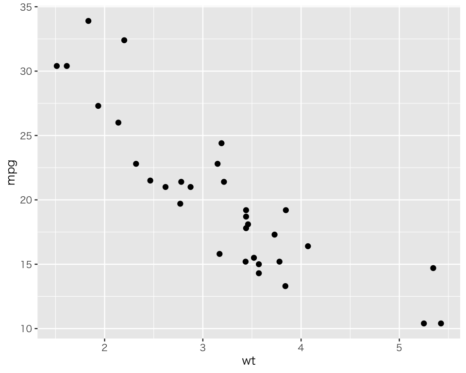
散布図ができた。
次に、ラベルをわかりやすいものに変える。labs() で変更する。
p1_3 <- p1_2 +
labs(x = "重量 (1000 lbs)",
y = "燃費 (Miles / US gallon)")表示してみる。
plot(p1_3)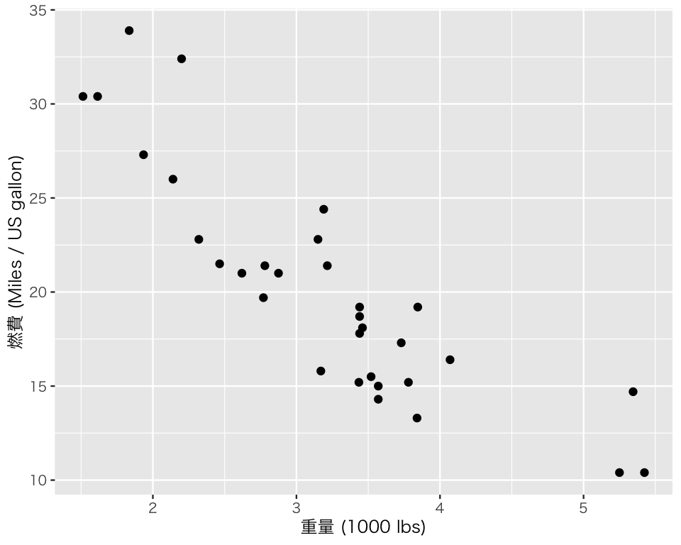
これで散布図ができた。
慣れてきたら、一挙にコマンドを書いてもよい。
p1 <- ggplot(mtcars, aes(x = wt, y = mpg)) +
geom_point() +
labs(x = "重量 (1000 lbs)",
y = "燃費 (Miles / US gallon)")
plot(p1)
6.3.3.2 例2：ヒストグラム
引き続き mtcars を使う。燃費 (mile per gallon; mpg) のヒストグラムを作ってみよう。
まず、作図対象となるデータを入力する。また、作図対象となる変数を指定する。ヒストグラムは1つの変数を可視化するグラフなので、aes にはxのみ指定する。
この時点で図を表示してみる。
plot(p2_1)指定した通り、横軸にmpgをとった図を描く準備ができているが、グラフ自体はまだない。また、縦軸は指定していないので何もない。
ここに、ヒストグラムを作るための層 (layer) を加える。ヒストグラムは、geom_histogram() でできる。
p2_2 <- p2_1 +
geom_histogram()この時点で表示してみよう。
ヒストグラム自体はできている。しかし、ビン（ヒストグラムの一つひとつの棒）の幅が狭すぎるので、binwidth で調整する（binwidth を指定しないと、`stat_bin()` using … というメッセージが表示され、適切な binwidth を設定するよう促される）。ここでは、2.5 mpgごとに1つのビン（ヒストグラムの棒）を作ってみよう。
p2_3 <- p2_1 +
geom_histogram(binwidth = 2.5)
plot(p2_3)ビンの境が見えにくいので、ビンの縁に黒色をつけよう。ビンの縁取りは color で指定する。color で指定するのはビンの中身を塗りつぶす色ではないので注意しよう。
p2_4 <- p2_1 +
geom_histogram(binwidth = 2.5, color = "black")
plot(p2_4)ビンの区切りがちょうどいい位置にないので、boundary でビンの境界をどの位置に置くか指定する。今回はビンの幅が2.5 なので、境界線が\(5, 7.5, 10, \dots\) になるように 5 を指定する。
p2_5 <- p2_1 +
geom_histogram(binwidth = 2.5,
color = "black",
boundary = 5)
plot(p2_5)次に、ラベルをわかりやすいものに変える。
これで縦軸が度数 (count, frequency) のヒストグラムができた。
ヒストグラムの縦軸を確率密度 (probability density) に変えたいときは、aes() で y = after_stat(density) を指定する。ついでに、ビンの色をドジャーブルーに変えてみる（必要ではない。Go, Dodgers!)
p2_dens <- ggplot(mtcars,
aes(x = mpg,
y = after_stat(density))) +
geom_histogram(binwidth = 2.5,
boundary = 5,
color = "black",
fill = "dodgerblue") +
labs(x = "燃費 (Miles / US gallon)",
y = "確率密度")
plot(p2_dens) 指定可能な色は、このページ で確認できる。
6.3.3.3 例3：箱ひげ図
Rに用意されている、ダイヤモンドのデータ diamonds を使ってみよう。
Rows: 53,940
Columns: 10
$ carat <dbl> 0.23, 0.21, 0.23, 0.29, 0.31, 0.24, 0.24, 0.26, 0.22, 0.23, 0.…
$ cut <ord> Ideal, Premium, Good, Premium, Good, Very Good, Very Good, Ver…
$ color <ord> E, E, E, I, J, J, I, H, E, H, J, J, F, J, E, E, I, J, J, J, I,…
$ clarity <ord> SI2, SI1, VS1, VS2, SI2, VVS2, VVS1, SI1, VS2, VS1, SI1, VS1, …
$ depth <dbl> 61.5, 59.8, 56.9, 62.4, 63.3, 62.8, 62.3, 61.9, 65.1, 59.4, 64…
$ table <dbl> 55, 61, 65, 58, 58, 57, 57, 55, 61, 61, 55, 56, 61, 54, 62, 58…
$ price <int> 326, 326, 327, 334, 335, 336, 336, 337, 337, 338, 339, 340, 34…
$ x <dbl> 3.95, 3.89, 4.05, 4.20, 4.34, 3.94, 3.95, 4.07, 3.87, 4.00, 4.…
$ y <dbl> 3.98, 3.84, 4.07, 4.23, 4.35, 3.96, 3.98, 4.11, 3.78, 4.05, 4.…
$ z <dbl> 2.43, 2.31, 2.31, 2.63, 2.75, 2.48, 2.47, 2.53, 2.49, 2.39, 2.…class(diamonds)[1] "tbl_df" "tbl" "data.frame"詳細については、?diamonds で確認できる。
ダイヤモンドのカットの質 (cut) ごとの 深さ (depth) のばらつきを可視化するため、箱ひげ図 (box[-and-whisker] plot) を作ってみよう。
まず、データとマッピングを指定する。
指定通り、横軸に cut、縦軸に depth を可視化する準備ができている。
次に、geom_boxplot() で箱ひげ図の層を加える。
p3_2 <- p3_1 +
geom_boxplot()
plot(p3_2)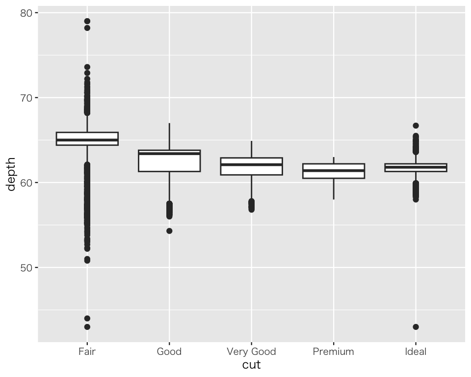
軸ラベルを日本語にする。
Fair, Good なども日本語にすることもできるが、今回は覚えなくて良い（私にはダイヤモンドの知識がまったくないのでよくわからないが、ネットで検索した限りだと、Fair の訳は フェア、Good の訳は グッド、 … で日本語にする意味がなさそう）。一応できるということを見せるために、コードは載せておく（このコードは今は理解しなくてよい）。
p3_3a <- diamonds |>
mutate(cut_jp = factor(
cut,
levels = c("Fair", "Good", "Very Good", "Premium", "Ideal"),
labels = c("フェア", "グッド", "ベリーグッド",
"プレミアム", "アイディアル"))) |>
ggplot(aes(x = cut_jp, y = depth)) +
geom_boxplot() +
labs(x = "カット", y = "深さ")
plot(p3_3a)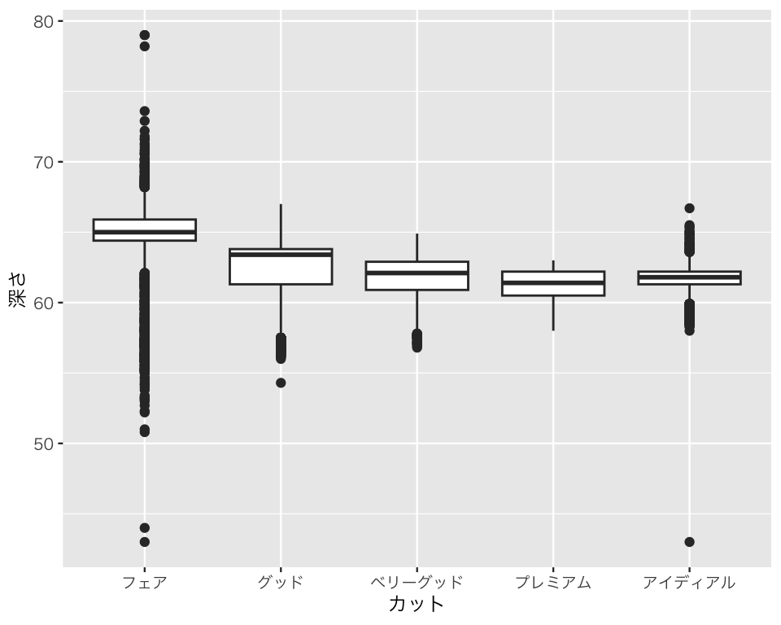
箱ひげ図の向きを横向きにしたいときは、作った図に coord_flip() を使えば良い。
p3_4 <- p3_3 +
coord_flip()
plot(p3_4)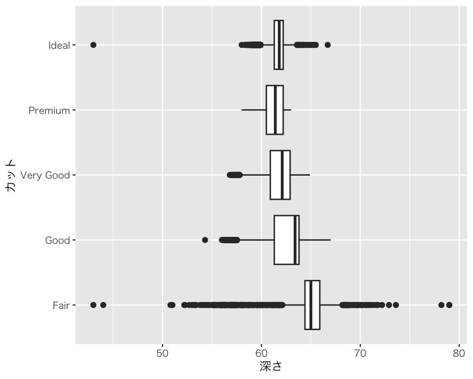
このように、coord_flip() は横軸と縦軸を入れ替えてくれる。箱ひげ図以外でも使える。
また、aes() の xとy を入れ替えることで、向きを変えることもできる。
p4 <- ggplot(diamonds, aes(x = depth, y = cut)) +
geom_boxplot() +
labs(x = "カット", y = "深さ")
plot(p4)
これらの例からわかるとおり、作図に用いる変数の指定は、aes() で行う。aes とは aesthetics（美感、見た目）のことである。この aes() の指定の仕方は作る図によって異なる。したがって、ggplot2 の使い方をマスターするには、geom ごとに異なるaes の使い方を覚える必要がある。覚えるといっても、必ずしも暗記する必要なない。頻繁に使うものは覚えたほうが楽（自然に覚える）が、その他のものについては上で紹介したチートシートやインターネット上にまとめられた情報（たとえば、ココ やココ）で確認すればよい。
6.4 作成した図の保存
作成した図は、PDFファイルやPNGファイルなどの外部ファイルに保存することができる。プロジェクト内に、図を保存するための figs というディレクトリ（フォルダ）を新たに作り、図をその中に保存しよう。
dir.create("figs")図はPDFとして保存することが望ましい（理由の説明は省略するが、一言で述べれば「ベクター画像」が望ましいから）ので、PDFファイルでの保存方法のみ説明する。
図のファイルを作るときは、あらかじめ図のサイズ（幅 [width] と高さ [height]）を決めておくことが重要である。いいかげんなサイズで図を作り、後で拡大・縮小すると、軸ラベルの文字などが伸びたり縮んだりして汚くなるので、スマートではない。
基本的には、以下の3つのステップで図を保存する。
- 図を保存するためのファイルを開く（作る）
- 図をファイルに書き込む
- ファイルを閉じる
これら3つのステップはセットで行う。Quarto (R Markdown) を使っている場合は特に注意が必要で、各ステップを1つずつ実行しても図が保存されない。 そこで、3つのステップを1つのコードチャンクの中にまとめて書き、以下のいずれかの方法でチャンク全体を一挙に実行する必要がある。
- ショートカットを使う
-
command+shift+return(macOS) -
Ctrl+Shift+Enter（どのOSでも）
-
- チャンク右上の実行ボタン (Run Current Chunk) をクリックする
PDF形式の図を保存するには、cairo_pdf() という関数を使うのが便利である。 先ほど作ったヒストグラム p2_6 を、PDFファイルに保存しよう。 ファイル名は、hist_eg1.pdf にしよう。図の大きさは、A4用紙の半ページよりやや小さくなるように、幅 (width) を5インチ (127.0mm)、高さ (height) を4インチ (101.6mm) にする。軸ラベルに日本語を使っているので、日本語を表示できるフォントを指定する必要があるが、上で library(tidyverse) を実行した直後に fontregregisterer パッケージを利用して theme_set() で指定したフォント（Linux は IPAexゴシック、macOS は ヒラギノ角ゴシック、Windows は游ゴシック）が使われる。 第1ステップの内容をまとめると、次のようになる（第1ステップだけで実行しない!!!）。
cairo_pdf(file = "figs/hist_eg1.pdf",
width = 5, height = 4)file の figs/ という部分が、figs ディレクトリ（フォルダ）の中にファイルを作ることを指示している。
第2ステップは、第1ステップの直後に print(p2_6) とすればよい。
最後に、ファイルを閉じるために、dev.off() を実行する。
以上をまとめると、次のようになる。qmd (Rmd) ファイルを使っている場合は、以下のコードチャンクを一挙に実行する必要がある（Rスクリプトでは1行ずつ実行してよい）。
これで図 (p2_6) が保存されるはずだ。figsディレクトリの中に、hist_eg1.pdf というPDFファイルができていることを確かめよう。また、PDFファイルを開いて図が保存されていることも確認しよう。
6.5 よく使う図の作り方
ggplotの使い方を身につけるために、統計学でよく使う基本的な図を作ってみよう。
例として、fake_score.csv という架空のデータを使おう。このデータに含まれる変数は、以下の通りである。
- id: 個人識別番号。
- class: クラス。1組から8組まで。
- gender: 性別。女 (female) か男 (male) か。
- math: 数学の試験の得点。
- english: 英語の試験の得点。
- chemistry: 化学の試験の得点。
まず、データを保存するためのディレクトリを作る。既にプロジェクト内に data ディレクトリがある場合（これまでの実習をすべて実行していれば、既にあるはずである）、このコマンドは実行しなくてよい。
dir.create("data")次に、データをダウンロードするココをクリック して対象をファイルに保存する。保存先はプロジェクトフォルダの中の data フォルダにする（ダウンロードした後にファイルを移動してもよい）。
コマンドでダウンロードする場合には、次のコードを実行する。大学のパソコンではうまくいなかいので、実行しないように。
download.file(
url = "https://yukiyanai.github.io/jp/classes/stat1/data/fake_score.csv",
destfile = "data/fake_score.csv"
)ダウンロードしたデータを読み込む。
myd <- read_csv("data/fake_score.csv")データの中身を確認する。
glimpse(myd)Rows: 400
Columns: 6
$ id <dbl> 1, 2, 3, 4, 5, 6, 7, 8, 9, 10, 11, 12, 13, 14, 15, 16, 17, 1…
$ class <dbl> 1, 1, 1, 1, 1, 1, 1, 1, 1, 1, 1, 1, 1, 1, 1, 1, 1, 1, 1, 1, …
$ gender <chr> "female", "female", "female", "female", "female", "female", …
$ math <dbl> 100, 43, 80, 52, 63, 45, 74, 54, 59, 74, 65, 41, 71, 75, 75,…
$ english <dbl> 68, 59, 67, 60, 72, 59, 69, 66, 72, 73, 77, 52, 69, 65, 57, …
$ chemistry <dbl> 97, 60, 75, 60, 57, 67, 62, 63, 69, 67, 70, 48, 59, 76, 84, …正しくデータが読み込めたようだ。このデータを使い、作図の方法を学習しよう。
6.5.1 棒グラフ
棒グラフ (bar plot) は geom_bar() で作る。まず、クラスごとの人数を棒グラフにしてみよう。 横軸にクラス、縦軸にはクラスの人数を表示する。そのために、次のコマンドを使う。
表示してみよう。
plot(bar1)各クラスの人数が、等しく50人ずつであることがわかる。
横軸のクラスの数字1から8のうち、表示されていない数字がある。scale_x_continuous() を使って、すべて表示させよう。既に作った bar1 を基に、新しい図を作る。
bar2 <- bar1 +
scale_x_continuous(breaks = 1:8)表示してみよう。
plot(bar2)クラスの数字をすべて表示することができた。
男女の内訳はどうなっているだろうか。男女を色分けして描き、図で確かめよう。 データセットに含まれる gender という変数を使って色分けするために、aes の中で fill を指定する。
bar3 <- ggplot(myd, aes(x = class, fill = gender)) +
geom_bar() +
labs(x = "クラス", y = "人数") +
scale_x_continuous(breaks = 1:8)
plot(bar3)女子の方が多いクラスと男子の方が多いクラスがあるようだ。 凡例 (legend) が英語になっているので、日本語に直そう。ついでに利用するカラーパレットも変える。
bar4 <- bar3 +
scale_fill_brewer(palette = "Accent",
name = "性別",
labels = c("女", "男"))
plot(bar4)この棒グラフでは男女の数の比較が難しいので、男女の棒を並べて描きたい。そのために、position = "dodge" を指定する。
bar5 <- ggplot(myd, aes(x = class, fill = gender)) +
geom_bar(position = "dodge") +
labs(x = "クラス", y = "人数") +
scale_x_continuous(breaks = 1:8) +
scale_fill_brewer(palette = "Set2",
name = "性別",
labels = c("女", "男"))
plot(bar5)これで、クラス1からクラス4までは女子が20人で男子が30人だが、残りのクラスでは男女の数が逆転していることがわかる。
6.5.2 ヒストグラム
ヒストグラム (histogram) は、ある変数の分布の仕方を確かめる際に最も便利な図である。 既に説明した通り、ヒストグラムを作るには geom_histogram() を使う。
6.5.2.1 基本的な使い方
まず、数学の点数をヒストグラムにしてみよう。
hist1 <- ggplot(myd, aes(x = math)) +
geom_histogram() +
labs(x = "数学の点数", y = "人数")
plot(hist1)`stat_bin()` using `bins = 30`. Pick better value with `binwidth`.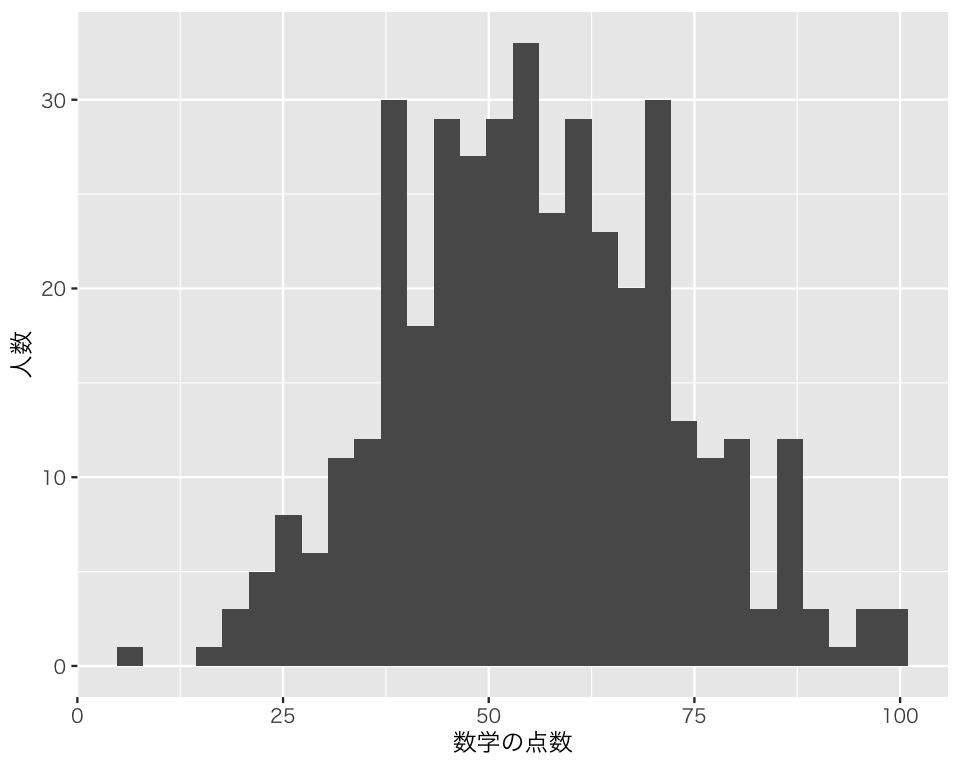
このままだと、ヒストグラムの一つひとつの棒 (bin) の区切りが分かりにくいので、棒の縁に色をつけよう。 既に説明したとおり、縁取りの色はcolor で指定する。このとき、変数によって色を変えるのではなく、自分で設定した色を使うため、aesの外で color を指定する（上での棒グラフの例では、aesの中で fill を指定した）。
hist2 <- ggplot(myd, aes(x = math)) +
geom_histogram(color = "black") +
labs(x = "数学の点数", y = "人数")
plot(hist2)`stat_bin()` using `bins = 30`. Pick better value with `binwidth`.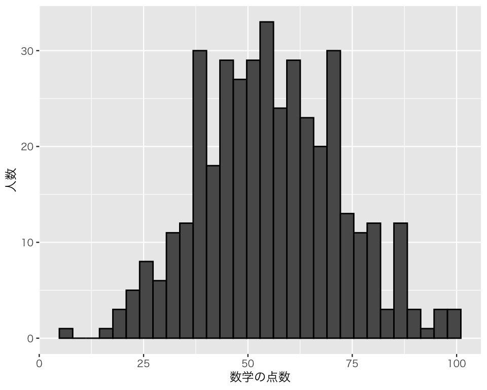
次に棒の幅 (bin width) を変えてみよう。binwidth を指定することで、棒の幅を設定できる。試しに、10点ごとにしてみよう。
hist3 <- ggplot(myd, aes(x = math)) +
geom_histogram(color = "black", binwidth = 10) +
labs(x = "数学の点数", y = "人数")
plot(hist3)6.5.2.2 縦軸を確率密度に変える
上で説明したとおり、y に after_stat(density) を指定することで、縦軸を確率密度 (probability density) に変えることができる。
hist4 <- ggplot(myd, aes(x = math, y = after_stat(density))) +
geom_histogram(color = "black", binwidth = 10) +
labs(x = "数学の点数", y = "確率密度")
plot(hist4)縦軸が確率密度のヒストグラムができた。
6.5.2.3 複数の geom を重ねる
数学の点数の平均値は、
mean(myd$math)[1] 55.6である。これを図に書き加えよう。
まず、geom_vline() で、平均値の位置に縦線を加える。 vlineのv はvertical（垂直）を示す。 geom_vline()で縦線の位置を決めるために、xintercept（x切片、つまり、線が横軸と交わる位置）を指定する。
hist5 <- hist3 +
geom_vline(xintercept = mean(myd$math),
color = "red")
plot(hist5)次に、平均値の値を（小数第一位までに丸めて [round] して）書き込む。 日本語を使うので、family でフォントを指定する必要がある。
表示する。
plot(hist6)Warning in geom_text(aes(x = 70, y = 90, label = str_c("平均値：", round(mean(myd$math), : All aesthetics have length 1, but the data has 400 rows.
ℹ Please consider using `annotate()` or provide this layer with data containing
a single row.
6.5.2.4 facet でグループを分ける
数学の点数のヒストグラムを、クラスごとに分けて描いてみよう。そのために、facet_wrap() を使う。
hist7 <- hist3 +
facet_wrap(vars(class))
plot(hist7)このように、クラスごとにヒストグラムができる。
6.5.3 箱ひげ図
ヒストグラムは分布の形状を確かめるのに便利だが、上で作った hist7 のように、複数のグループの分布を比較するのには少し不便である。 そこで異なるグループの分布を比較するときによく使われるのが、箱ひげ図 (box[-and-whisker] plot) である。箱ひげ図は、五数要約（最小値、第1四分位数、中央値、第3四分位数、最大値）と外れ値（「1.5 \(\times\) IQRルール」で判定される）を図で表現するものである。
箱ひげ図は、geom_boxplot() で作る。このとき、aes には x（比較するグループを表す変数）とy（作図の対象となる変数）を指定する（xの代わりに group を使うこともできる）。ここで、class の中身の数字には数値としての意味はなく、単にクラス分けのための記号にすぎないことを gpplotに伝えるために as.factor() を使う（本当はデータ前処理の時点で id と class は factor にしておくことが望ましいが、今回はこれで妥協する）。既に説明したとおり、横向きにしたいときは、x とy を入れ替えれば良い。
box1 <- ggplot(myd, aes(x = as.factor(class), y = math)) +
geom_boxplot() +
labs(x = "クラス", y = "数学の点数")
plot(box1)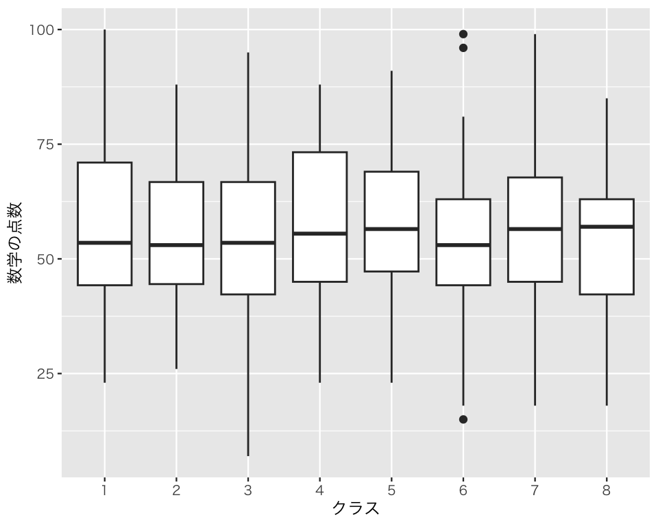
これで、グループ間で数学の点数の五数を比較しやすくなった。
6.5.4 バイオリンプロット
箱ひげ図でグループ間比較がしやすくなったが、ヒストグラムとは異なり、分布の形状がわからなくなってしまった。この不満を解消してくれるのが、バイオリンプロット (violin plot) である。geom_violin() で作る。
vln1 <- ggplot(myd, aes(x = as.factor(class), y = math)) +
geom_violin() +
labs(x = "クラス", y = "数学の点数")
plot(vln1)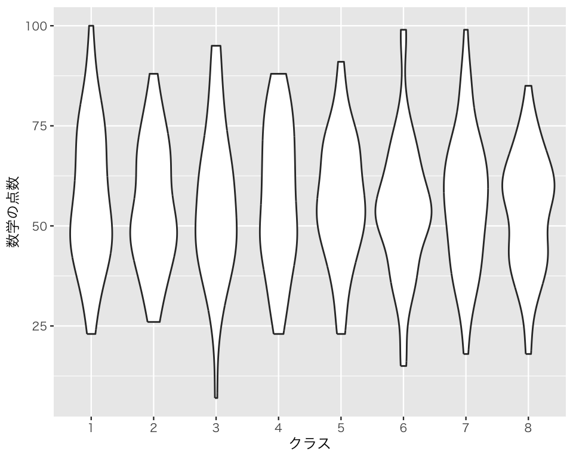
この図は、ヒストグラムを横倒しにしてその概形を滑らかな線で表したものと、それを鏡に写したものが合わさってできている。バイオリンプロットの幅が広い（狭い）ところが、ヒストグラムの山が高い（低い）ところである。
6.5.5 箱ひげ図とバイオリンプロットの重ね描き
バイオリンプロットは、分布の形状がわからないという箱ひげ図の弱点を克服しているものの、箱ひげ図では一目でわかった中央値や四分位範囲がわからないという弱点がある。両者の長所を活かすため、二つの図を重ねて描いてみよう。
bv1 <- ggplot(myd, aes(x = as.factor(class), y = math)) +
geom_boxplot() +
geom_violin() +
labs(x = "クラス", y = "数学の点数")
plot(bv1)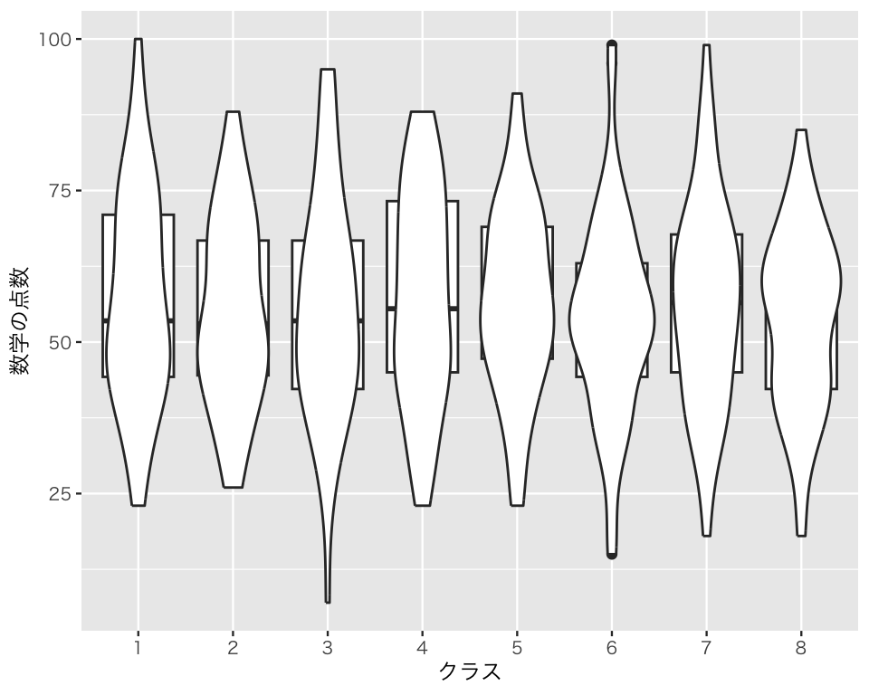
バイロリンプロットが箱ひげ図の線に重なり、箱ひげ図がよく見えない。箱ひげ図をバイオリンプロットの上に（手前に）描いたほうがよさそうだ。ggplotでは、後に加えた要素（層）が上になるので、geom_violin() の後に geom_boxplot() を書く。
bv2 <- ggplot(myd, aes(x = as.factor(class), y = math)) +
geom_violin() +
geom_boxplot() +
labs(x = "クラス", y = "数学の点数")
plot(bv2)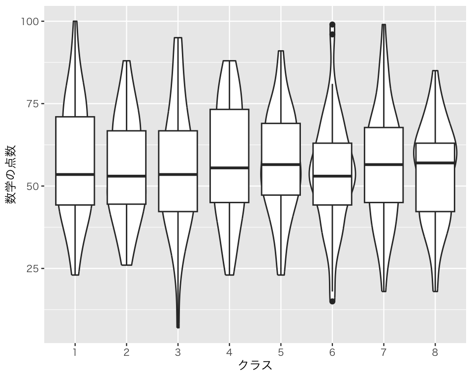
今度は、箱がバイオリンの線に重なってしまっている。geom_boxplot() で width を指定し、箱の幅を狭くしてみよう。
bv3 <- ggplot(myd, aes(x = as.factor(class), y = math)) +
geom_violin() +
geom_boxplot(width = 0.3) +
labs(x = "クラス", y = "数学の点数")
plot(bv3)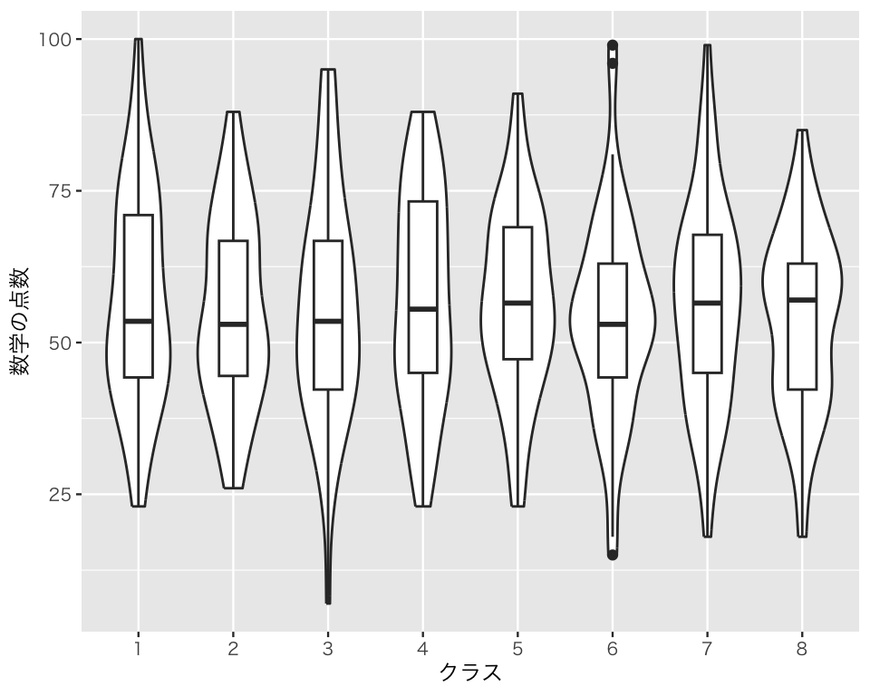
これで、箱ひげ図とバイロリンプロットが同時に確認できるようになった。しかし、このままでは箱ひげ図が目立たないので、色を変えよう。
bv4 <- ggplot(myd, aes(x = as.factor(class), y = math)) +
geom_violin() +
geom_boxplot(width = 0.3, fill = "gray") +
labs(x = "クラス", y = "数学の点数")
plot(bv4)この図を見れば、数学の点数の分布をクラス間で比較できる。
6.5.6 散布図
ここまでは、1つの変数を可視化するグラフを作ってきた。続いて、2変数の関係を可視化してみよう。
2変数（2つの量的変数）の関係を可視化するための最も基本的な図は散布図 (scatter plot) である。散布図は、geom_point() で作る。散布図のaesには、横軸の変数 x と縦軸の変数 y を指定する。
数学の点数（横軸）と英語の点数（縦軸）の関係を散布図にしみてよう。
scat1 <- ggplot(myd, aes(x = math, y = english)) +
geom_point() +
labs(x = "数学の得点", y = "英語の得点")
plot(scat1)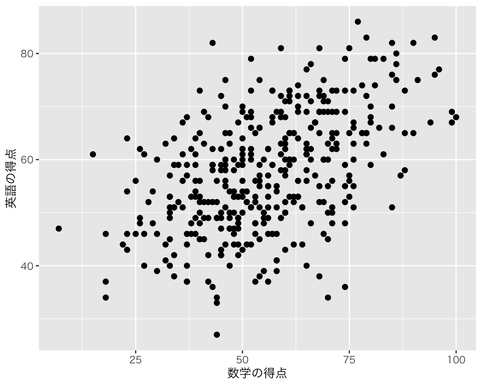
英語も数学も100点満点の試験なのに、図が横長になっていて数学の得点の範囲の方が広く見えてしまう。 この点を改善するために、xlim() と ylim() で横軸と縦軸の範囲を指定し、coord_fixed(ratio = 1) で縦横比を1:1にしよう（ratio = 1 はデフォルトなので、単に coord_fixed() でもいいが、比がはっきりわかるようにここでは明示しておく）。
scat2 <- scat1 +
xlim(0, 100) +
ylim(0, 100) +
coord_fixed(ratio = 1)
plot(scat2)男女の点を、色 (color) と形 (shape) で区別してみよう。
まず、色で区別する。
scat3 <- ggplot(myd,
aes(x = math,
y = english,
color = gender)) +
geom_point() +
labs(x = "数学の得点",
y = "英語の得点") +
scale_color_discrete(name = "性別",
labels = c("女", "男")) +
xlim(0, 100) +
ylim(0, 100) +
coord_fixed(ratio = 1)
plot(scat3)
これで一応色分けはできたが、色があまり気に入らない。 特に、赤と緑を区別できない人がいると思われるので、scale_color_brewer() で色使い (color paletter) を Accent に変えてみよう。指定できるパレットについては、このページ を参照されたい。
scat3a <- ggplot(myd,
aes(x = math,
y = english,
color = gender)) +
geom_point() +
labs(x = "数学の得点",
y = "英語の得点") +
scale_color_brewer(palette = "Accent",
name = "性別",
labels = c("女", "男")) +
xlim(0, 100) +
ylim(0, 100) +
coord_fixed(ratio = 1)
plot(scat3a)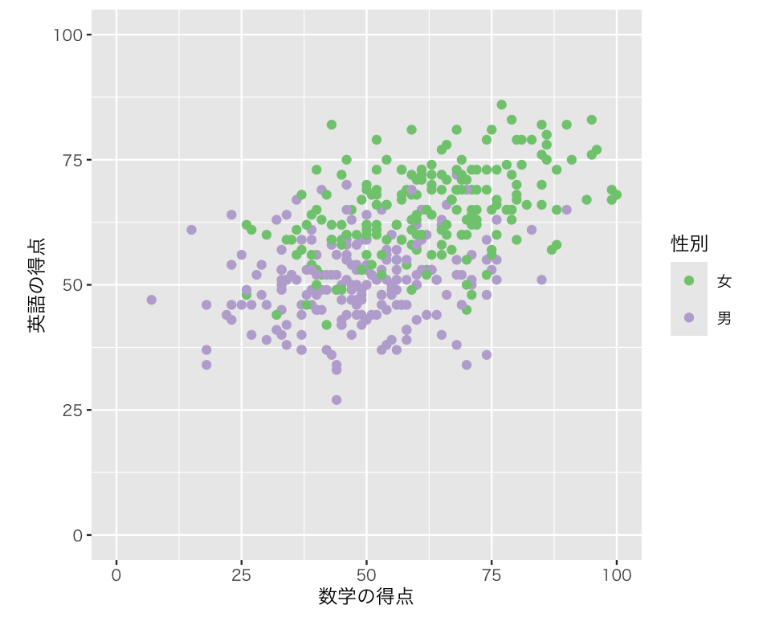
色分けができた。試しにもう1つ異なるパレットを作ってみよう。Set1 を使ってみる。
scat3b <- ggplot(myd,
aes(x = math,
y = english,
color = gender)) +
geom_point() +
labs(x = "数学の得点",
y = "英語の得点") +
scale_color_brewer(palette = "Set1",
name = "性別",
labels = c("女", "男")) +
xlim(0, 100) +
ylim(0, 100) +
coord_fixed(ratio = 1)
plot(scat3b)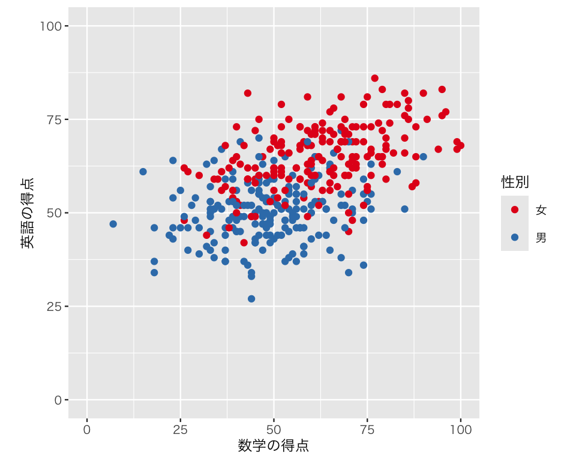
「男は青で女は赤」というステレオタイプ（偶然そうなってしまっただけだが）が気にいらないなら、色を逆にしてみよう。パレットに用意された色を使う順番を、direction = -1 で逆順にできる。
scat3c <- ggplot(myd,
aes(x = math,
y = english,
color = gender)) +
geom_point() +
labs(x = "数学の得点",
y = "英語の得点") +
scale_color_brewer(palette = "Set1",
direction = -1,
name = "性別",
labels = c("女", "男")) +
xlim(0, 100) +
ylim(0, 100) +
coord_fixed(ratio = 1)
plot(scat3c)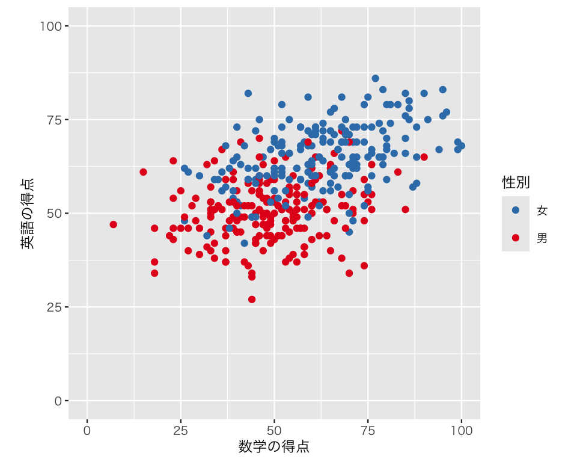
次に、形 (shape) で区別する。
scat4 <- ggplot(myd,
aes(x = math,
y = english,
shape = gender)) +
geom_point() +
labs(x = "数学の得点",
y = "英語の得点") +
scale_shape_discrete(name = "性別",
labels = c("女", "男")) +
xlim(0, 100) +
ylim(0, 100) +
coord_fixed(ratio = 1)
plot(scat4)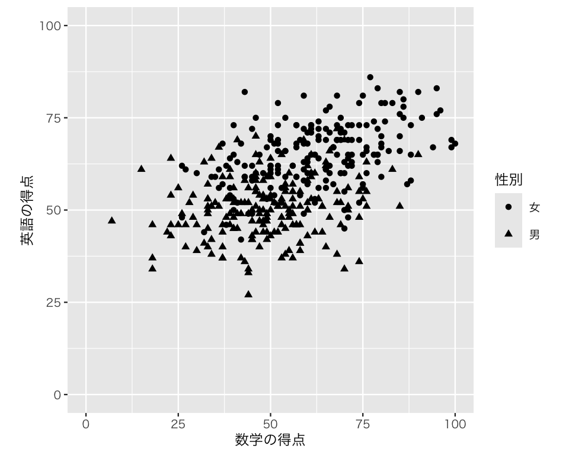
最後に、色と形で区別する。
scat5 <- ggplot(myd,
aes(x = math,
y = english,
color = gender,
shape = gender)) +
geom_point() +
labs(x = "数学の得点",
y = "英語の得点") +
scale_color_brewer(palette = "Accent",
direction = -1,
name = "性別",
labels = c("女", "男")) +
scale_shape_discrete(name = "性別",
labels = c("女", "男")) +
xlim(0, 100) +
ylim(0, 100) +
coord_fixed(ratio = 1)
plot(scat5)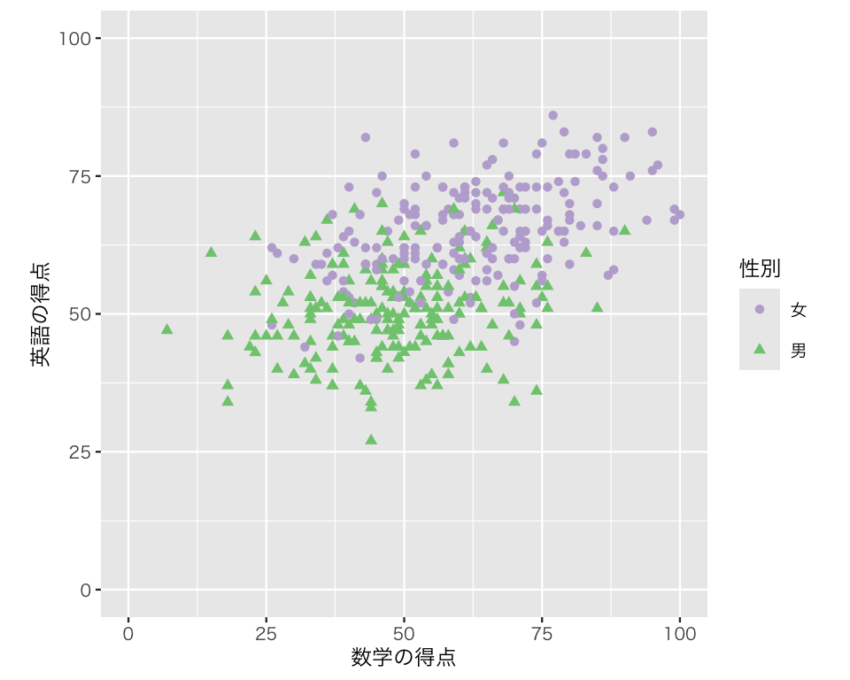
このように、ggplot2を使えば簡単に綺麗な図を作ることができる。
慣れるまではggplot2での作図を面倒に感じるかもしれないが、慣れてしまえばggplotが手放せなくなるだろう。